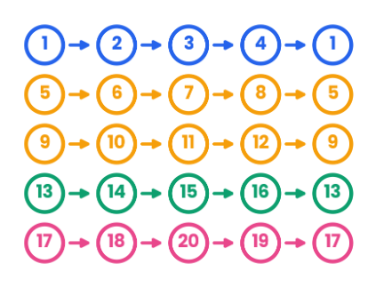
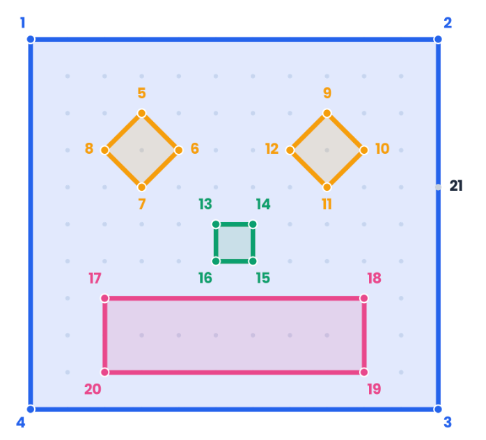

Robot dessine 1
Module 1 · 7–10 ans (4–6P) · 20 min · 4 étapes · fiche à imprimer
Les élèves jouent la machine : ils suivent un programme pour dessiner un robot, découvrent qu’une instruction est fausse, la corrigent et testent encore.
L’idée à retenir : Une machine classique exécute les instructions, dans l’ordre, sans rien inventer. Ces instructions, des humains les écrivent. Si le résultat est faux, l’erreur est dans les instructions.



Anne, enseignante, te guide étape par étape : les idées des élèves, la trace écrite, ce que l’activité simplifie.
Le matériel à imprimer (PDF)Guide pour l’enseignant·e (PDF)
Objectifs
- Vivre la notion de programme en jouant une machine qui exécute des instructions.
- Comprendre qu’une machine classique exécute aussi une instruction fausse, et que l’erreur est à chercher dans les instructions.
Notions
algorithme · programme · instruction fausse · déboguer
EN 12 · une suite d’instructions de la vie courante pour découvrir la notion d’algorithme
La séance · 4 étapes · 20 min
Suivre les instructions du programme · 5 min, seul — Chaque élève relie les points ligne après ligne, couleur après couleur : un robot apparaît.
« Reliez les points dans l’ordre indiqué, sans rien inventer. Que reconnaissez-vous ?nbsp;»
Le déroulement en détail
- Distribue la fiche EXERCICE 1, une par élève, et les crayons bleu, orange, vert et rose. Ne dis pas qu’il y a une erreur.
- Chaque élève suit les cinq lignes du programme, dans l’ordre et avec la bonne couleur : bleu 1 → 2 → 3 → 4 → 1, orange 5 → 6 → 7 → 8 → 5, orange 9 → 10 → 11 → 12 → 9, vert 13 → 14 → 15 → 16 → 13, rose 17 → 18 → 20 → 19 → 17.
- Quand tout est relié, demande : « Que reconnaissez-vous ?nbsp;» Réponse attendue : un robot.
Ce qui doit ressortir : Chacun a dessiné un robot en suivant le programme, comme une machine.
Comparer les dessins · 5 min, en classe — Affiche le résultat attendu. Même programme, même bouche croisée pour tout le monde : où est l’erreur ?
« Votre dessin ressemble-t-il au modèle ? Qu’est-ce qui est différent ?nbsp;»
Le déroulement en détail
- Affiche le résultat attendu au tableau. Chacun le compare à son dessin.
- Demande : « Qu’est-ce qui est différent ?nbsp;» Les yeux, le nez et le contour sont pareils ; la bouche est croisée, et chez tout le monde.
- Demande : « Vous avez tous suivi le programme, et tous la même erreur : qui s’est trompé ?nbsp;» Écoute les idées, sans trancher encore.
Ce qui doit ressortir : Tout le monde a la même bouche croisée : l’erreur ne vient pas des élèves.
Corriger les instructions · 5 min, en classe — La ligne rose « 17 → 18 → 20 → 19 → 17 » est fausse : la classe la corrige, puis teste encore. C’est déboguer.
« Quelle instruction faut-il corriger pour que le robot ait la bonne bouche ?nbsp;»
Le déroulement en détail
- Écris le programme au tableau, une instruction par ligne (« Relie en bleu : 1 → 2 → 3 → 4 → 1. »…).
- La classe cherche l’instruction qui dessine la bouche : la ligne rose relie le 20 avant le 19, la bouche se croise.
- La classe propose une correction : « Relie en rose : 17 → 18 → 19 → 20 → 17. » « Relie avec soin » ou « Dessine une bouche » ne corrigent rien.
- Fais prédire : « Tout le monde aura-t-il le même dessin ?nbsp;» Puis chacun refait la bouche avec l’instruction corrigée et compare au modèle.
Ce qui doit ressortir : L’erreur était dans les instructions : on l’a trouvée, corrigée, puis testée. C’est déboguer.
Faire le point · 5 min, en classe — La trace écrite, en trois lignes : algorithme, instruction fausse, déboguer.
Le déroulement en détail
- Pour chaque ligne : pose la question, écoute les réponses, puis écris la ligne au tableau. Les élèves la copient.
- « Qu’avez-vous suivi pour dessiner le robot ?nbsp;» → Un algorithme, c’est une suite d’instructions, dans l’ordre, pour faire une tâche. Écrit pour une machine, c’est un programme.
- « Pourquoi tout le monde avait-il la même erreur ?nbsp;» → La machine exécute aussi une instruction fausse : le résultat est faux, pour tout le monde.
- « Si le dessin est faux, qui s’est trompé ?nbsp;» → La machine exécute les instructions, dans l’ordre, sans rien inventer. Si le résultat est faux, l’erreur est dans les instructions : on la corrige, on teste encore. C’est déboguer.
Avant la séance
Fiche EXERCICE 1, une par élève · le résultat attendu, à afficher · crayons bleu, orange, vert, rose. La ligne rose contient une erreur voulue : ne le dis pas aux élèves.
Pour bien comprendre
Ici, « On lui dit tout ». Dans « Robot apprend à dessiner », « On lui montre des exemples » : la machine repère des régularités dans des exemples, et son comportement est plus difficile à prévoir.
Conseils
- Si un élève relie tous les points de 1 à 21, montre-lui le programme : la machine suit chaque ligne, pas l’ordre des nombres.
- À l’étape 3, écris l’instruction corrigée à côté de l’ancienne, puis faites tester le programme corrigé.
Évaluer
- Expliquer ce qu’est une instruction et ce qu’est un programme pour une machine.
- Dire qu’une machine exécute les instructions, même une instruction fausse.
- Trouver l’instruction fausse et la corriger (déboguer).
Dans le module
Robot dessine 1 Robot dessine 2 · instructions floues Robot apprend à dessiner · exemples